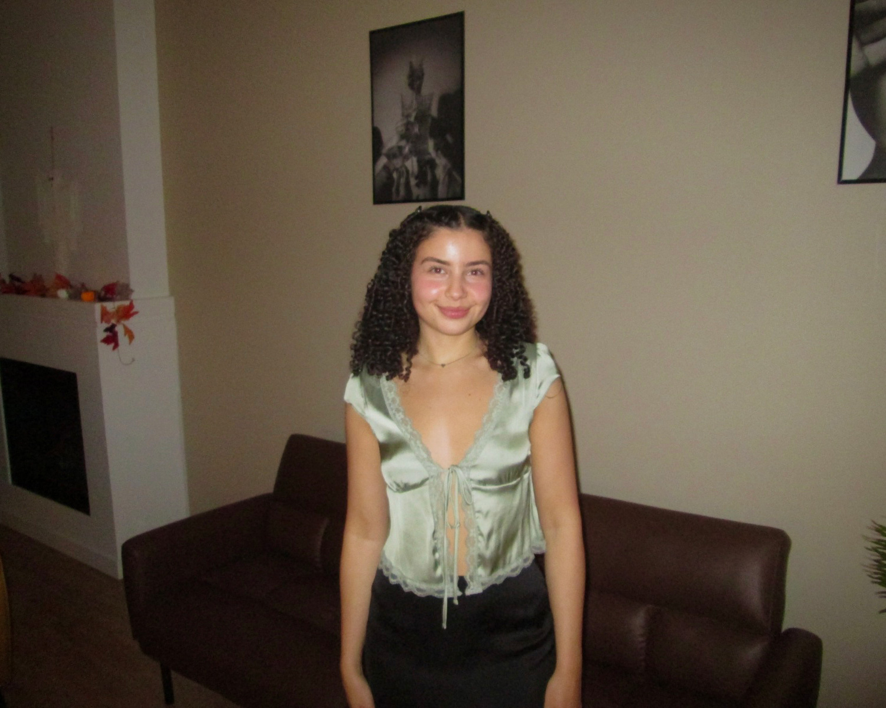

Hi! I’m Salma Fahmy, a Vancouver-based designer who loves turning ideas into visuals that feel creative, clear, and easy to connect with. I’m passionate about design that not only looks good, but also makes sense and feels intuitive for the people using it.
My work focuses on branding, UX/UI, and digital storytelling, and I enjoy working across both visual and digital spaces. From early sketches and wireframes to polished Figma prototypes, social media graphics, and editorial layouts, I like being involved throughout the full design process. I’m especially interested in how design can shape experiences, tell stories, and help brands communicate in a more meaningful and human way.
I’m drawn to projects that mix creativity with clarity. I enjoy breaking down complex ideas and turning them into designs that feel approachable, visually engaging, and purposeful. Whether I’m designing a brand identity, mapping out a user flow, or creating digital content, I always try to balance aesthetics with usability and intention.
My design process is collaborative and iterative. I enjoy researching, experimenting, and refining ideas, and I’m always open to feedback and learning new tools or approaches. I believe strong design comes from curiosity, empathy, and attention to detail—and I bring that mindset into every project I work on.
Outside of design, I’m constantly inspired by visual culture, storytelling, and how people interact with digital products in everyday life. I’m excited to continue growing as a designer and to work on projects that challenge me creatively while making a real impact.
UX/UI Design
User Research & User Flows
Wireframing & Prototyping
Interaction Design
Accessibility & Usability Basics
Brand Identity Design
Visual Systems & Style Guides
Digital & Print Design
Editorial Layouts
Social Media Design
Figma
Adobe Illustrator
Adobe Photoshop
Adobe InDesign
Digital Storytelling
Creative Problem-Solving
Collaboration & Communication
Attention to Detail
Iterative Design Process